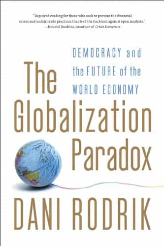

< < < Back
Why Democracy, Nationalism, And Globalist Economics Can’t Coexist – Return Of Kings
As several writers of ROK have pointed out, binary oppositions can trap people into ways of thinking and acting that lead to that other real or potential options are neglected. It might concern for example politics, culture and economics.
With regard to the latter, an obvious mistake is to think that the balanced option between capitalism and socialism is the Third way, the political-economic model promoted by scholars such as Anthony Giddens and popularized by not the least Scandinavian Social Democrats and the Tony Blair and Bill Clinton administrations in the early 1990s.
Of course, the Third way adherents make some good points on the benefits and flaws of Western capitalism and socialism and that one can combine elements from both, but it also solidifies the globalist narrative and its results has largely been devastating. Not just economically, since economics, politics and culture tend to go hand in hand. The same who promote the Third way do also cherish large-scale immigration and third-wave feminism.
Some might say that other available options already exist—for instance Buddhist civilizations have ideas that go beyond the Western binary opposition—but for Westerners, nation states, globalism and democracy are the general main factors that have to be taken into account, since those are largely what our curent world hinges upon, whether one likes it or not.
A scholar that can offer some guidance in this respect is the Turkish economist Dani Rodrik, especially his book The Globalization Paradox (2011). As a Harvard University economist he surely has intellectual limitations, but his vast knowledge about world economic history, in conjunction with many reasonable viewpoints, can help one to overcome at least some of the most basic false dichotomies.
Plus, these ideas are good to refer to when one discusses with pro-globalists who actually think that democracy and nation states also are two good things. But it seems that they have to choose, and people might as well be informed about that.

What is the globalization paradox?
A large share of Rodrik’s book is about economic history and some of the failures and success stories of the past. The failures include for instance Latin American countries during the 1970s and 80s that were based on neo-financial liberalization theories, and the success stories focus on for instance the Four Asian tigers (Singapore, South Korea, Taiwan and Hong Kong).
Some of these are already well-known facts, but the general reader can likely learn a great deal from this book. He also mentions the Bretton Woods system and its benefits, which historically represents the ”smart globalization” that Rodrik promotes:
The imbalance between the national scope of governance and the global nature of markets forms the soft underbelly of globalization. A healthy economic system necessitates a delicate compromise between these two. Give to much power to the governments, and you have protectionism and autarky. Give markets too much freedom, and you have an unstable world economy with little social and political support from those it is supposed to help.
Further:
So we have to make some choices. Let me be clear about mine: democracy and national determination should trump hyperglobalization. Democracies have the right to protect their social arrangements, and when this right clashes with the requirements of the global economy, it is the latter that should give away. We need smart globalization, not maximum globalization.
Rodrik appears to be insightful when he explains the so-called political trilemma of (world) economy:
In particular, you begin to understand what I would like to call the fundamental political trilemma of economy: we cannot simultaneously pursue democracy, national determination, and economic globalization. If we want to push globalization further, we have to give up either the nation state or democratic politics. If we want to maintain and deepen democracy, we have to choose between the nation state and international economic integration. And if we want to keep the nation state and self-determination, we have to choose between deepening democracy and deepening globalization.
Can a light version of globalization be a realistic option?
Rodrik’s alternative narrative might not help anyone to escape the binary trap between nationalism and globalism, but it still sheds light on some of the major problems that the deepening of globalization implicates. Plus, it offers a balanced view on the current world and some fairly realistic and available pathways for Western nations.
Anyone who is at least slightly informed on world economic history knows that the balanced globalization of the past has been beneficial for peaceful material development, at least in the West and East Asia, and if one values democracy and national sovereignty (and in fact, some authoritarian nations, such as China, will get a pass because it is too difficult to let democracy flourish there, and it is hard for anyone to change this fact).
The “hyperglobalists” might want to go in another direction and it is indeed very difficult for most people to do something about where things are heading. But normal and sane people who want to have a balanced perspective on economy and politics (not too much globalization, not too much immigration, but some globalization and immigration etc.) can still propose smarter views on these significant topics, and to be smarter than the elites is at least worth something.
Read More: 5 Steps For Saving The American Economy